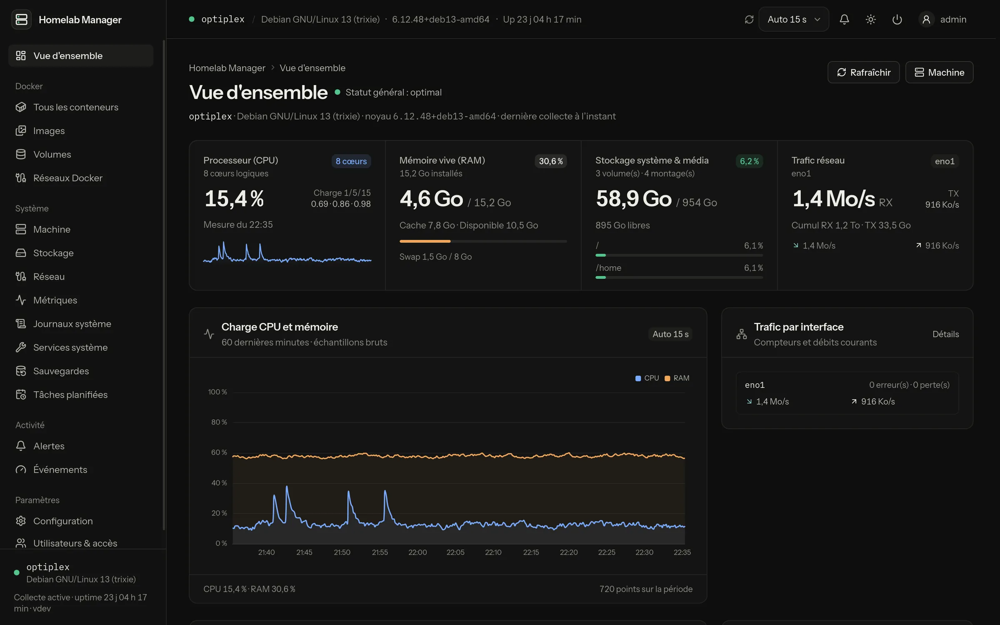
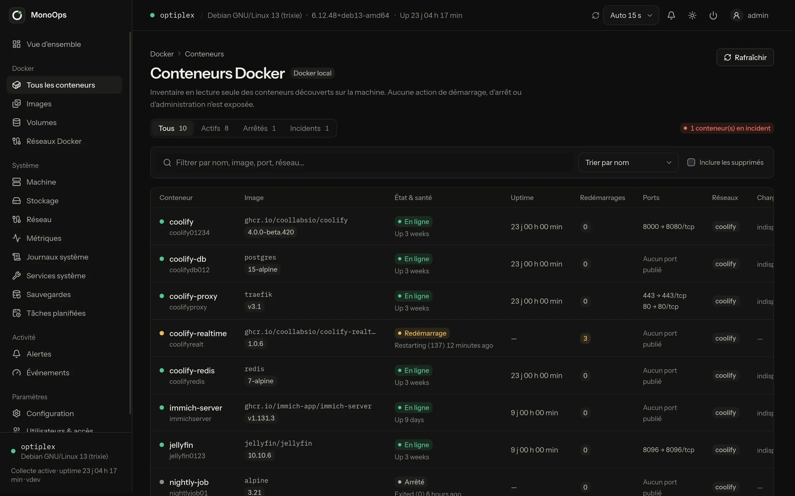
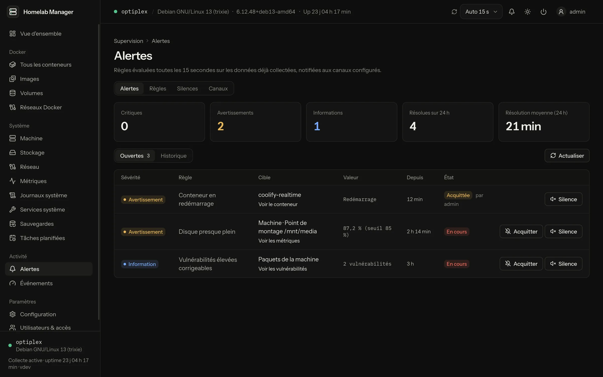
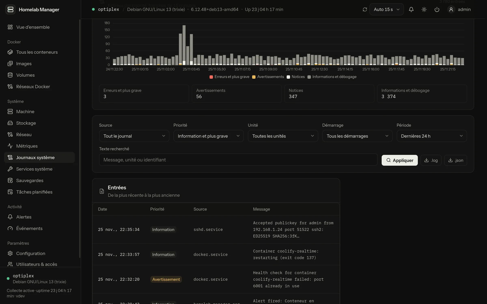
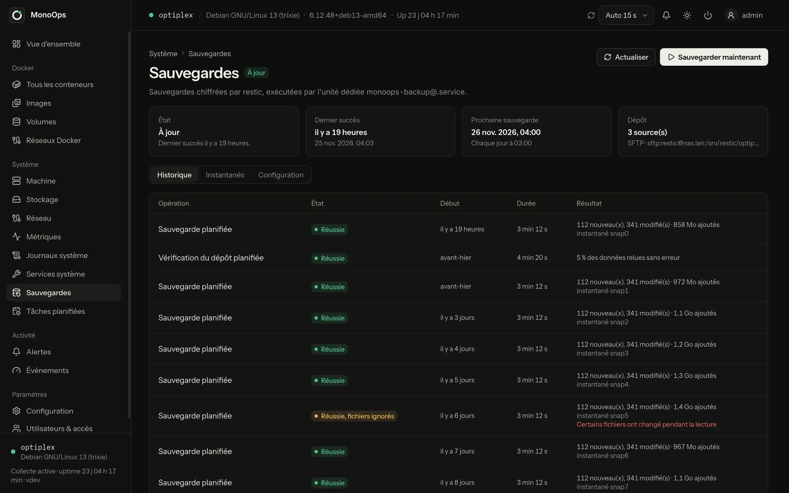
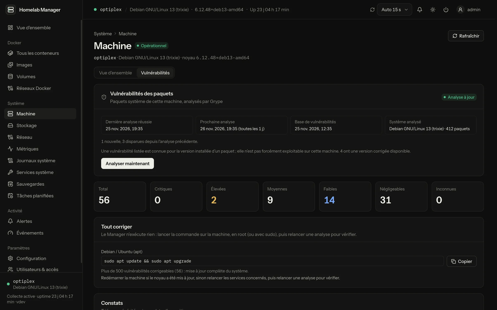
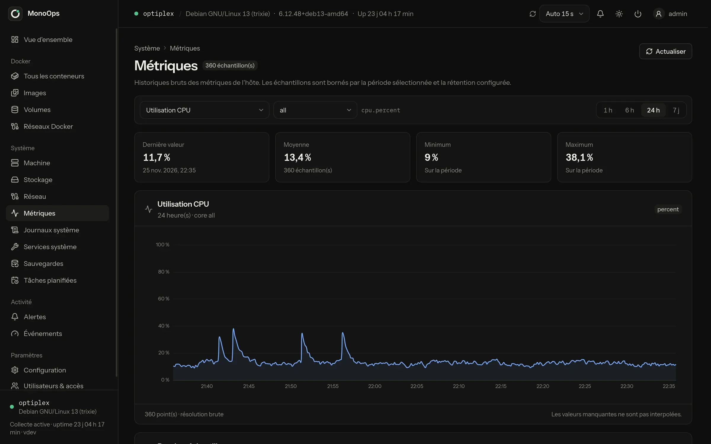

Métriques en temps réel
CPU, mémoire, swap, stockage, réseau et températures réellement disponibles, avec des historiques bruts ou agrégés de 1 à 365 jours.
Métriques, conteneurs Docker, journaux systemd, alertes, sauvegardes et vulnérabilités dans une seule interface auto-hébergée. Un binaire Go, un fichier SQLite, aucun cloud.

Construit sur des briques éprouvées, sans rien d'exotique
Captures de l’interface réelle, avec des données d’exemple.
Un inventaire en lecture seule, découvert en continu à travers un proxy Docker restreint.

Les règles sont évaluées toutes les 15 secondes sur les métriques, les conteneurs, les services, les sauvegardes et les vulnérabilités.

Les entrées des dernières 24 heures par priorité, avec les champs sensibles masqués.

Dépôts chiffrés locaux, REST, S3 ou SFTP, planifiés et vérifiés par une unité systemd dédiée.

Grype analyse chaque jour les paquets du système et compare chaque analyse à la précédente.

Les échantillons bruts sont conservés dans SQLite, puis agrégés pour les longues périodes.

La supervision est disponible dès l'installation. Les fonctions qui demandent un privilège sont désactivées par défaut et s'activent une à une.
CPU, mémoire, swap, stockage, réseau et températures réellement disponibles, avec des historiques bruts ou agrégés de 1 à 365 jours.
Découverte continue, métriques par conteneur, images, volumes et réseaux, journaux stdout et stderr de chaque conteneur.
Démarrer, arrêter : en optionFiltres, recherche, suivi en direct, synthèse sur 24 heures et export. Les champs sensibles sont masqués, tout reste en lecture seule.
Services, timers et sockets lus sur D-Bus. Crontabs et timers traduits en français, avec leurs prochaines et dernières exécutions.
Actions sur une liste blanche : en optionRègles évaluées toutes les 15 secondes sur les métriques, les conteneurs, les unités et les sauvegardes. Acquittement, silences, historique.
Dépôts chiffrés locaux, S3, SFTP ou rest-server, dépôt de copie pour la règle 3-2-1, restauration en quarantaine ou à l'emplacement d'origine.
Module à installerPaquets du système analysés par Grype chaque jour ou à la demande, vulnérabilités nouvelles et disparues entre deux scans, règle d'alerte.
Module à installerRôles viewer, operator et admin, TOTP, passkeys et clés FIDO2, sessions révocables et journal d'audit exportable.
Des jetons en lecture ou en action pour Home Assistant, Grafana ou vos scripts, limités au rôle de leur compte et inscrits à l'audit.
Chaque canal a sa sévérité minimale, son regroupement et sa renotification.
Un outil d'administration exposé sur le réseau est une cible. MonoOps ne propose rien qui donnerait, depuis le navigateur, un accès direct à la machine, et chaque privilège passe par une porte étroite.
Lire les exigences de sécurité →Chaque release contient les binaires, l'interface, les unités systemd et les règles polkit, pour amd64 et arm64.
# Télécharger et vérifier l'archive
VERSION=2.5.0
ARCH=amd64 # ou arm64
BASE=https://github.com/alexandrebouttierdev/monoops/releases/download/v$VERSION
curl -fsSLO "$BASE/monoops_${VERSION}_linux_${ARCH}.tar.gz"
curl -fsSLO "$BASE/SHA256SUMS"
sha256sum -c --ignore-missing SHA256SUMS
tar -xzf "monoops_${VERSION}_linux_${ARCH}.tar.gz"# Go 1.26 et Node.js 22 sur le poste de développement
git clone https://github.com/alexandrebouttierdev/monoops.git
cd monoops
npm --prefix frontend ci
scripts/release/build.sh 2.5.0 dist # archives amd64, arm64 et SHA256SUMSAuto-hébergé, sans compte à créer, et le code est public.